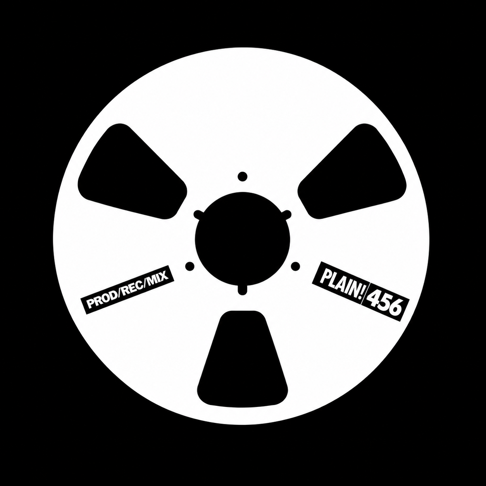
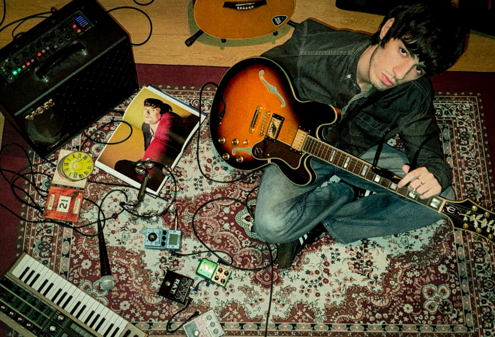
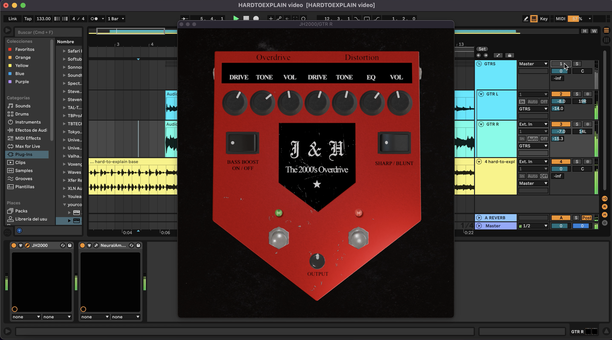

Técnico en Grabación y Post Producción de Audio
Buenos Aires, Argentina

Soy Matías, técnico de Grabación y Post Producción de Audio (Tecson, 2023).
Desde chico me interesé por la música y fui encontrando mi camino dentro de la producción musical y en el campo de la grabación y la mezcla.
Trabajé grabando, produciendo y mezclando diferentes proyectos en mi home studio. Esas experiencias me permitieron desarrollar tanto mis conocimientos técnicos como mi criterio a la hora de trabajar con músicos.
Además en septiembre de 2026 lance mi propio plugin VST, el "J&H2000". Inspirado en el icónico pedal "Jekyll & Hyde" popularizado por The Strokes a principios de los 2000.
Más info de mi plugin acá: plainsounds.com

